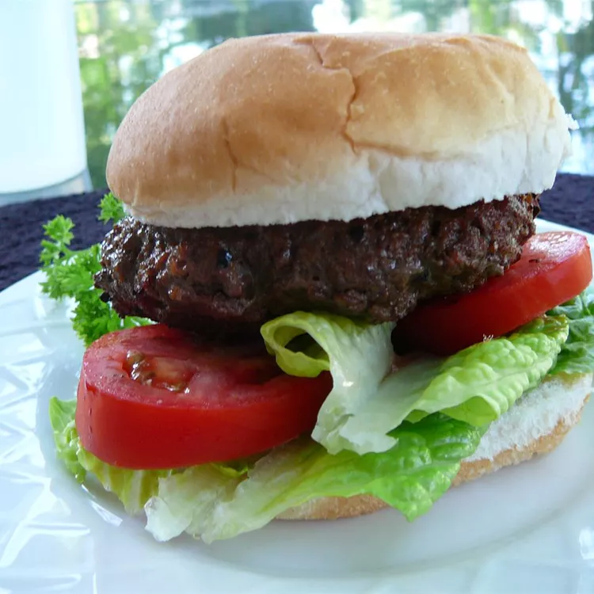

Hamburger

Description
This food will make any hamburger fanatic want more! Made with alcohol.
Ingredients
- 1 pound ground beef
- 1/2 cup beer
- 1/4 cup Worchester sauce
- 1 teaspoon garlic powder
- 1/2 teaspoon onion salt
- freshly ground black pepper to taste
Steps
- Shape the ground beef into three patties. Place the patties in a shallow dish.
- Combine the beer, Worcestershire sauce, garlic powder, onion salt, and pepper. Pour the marinade over the burgers. Refrigerate for 15 minutes. Flip the burgers over and marinate for an additional 15 minutes.
- Preheat an outdoor grill for medium-high heat, and lightly oil the grate.
- Place the patties on the hot grill and cook for 2 minutes before flipping them over. Cook the burgers to the desired degree of doneness, about 5 minutes per side for well done. An instant-read thermometer inserted into the center should read 160 degrees F (70 degrees C).
Homepage